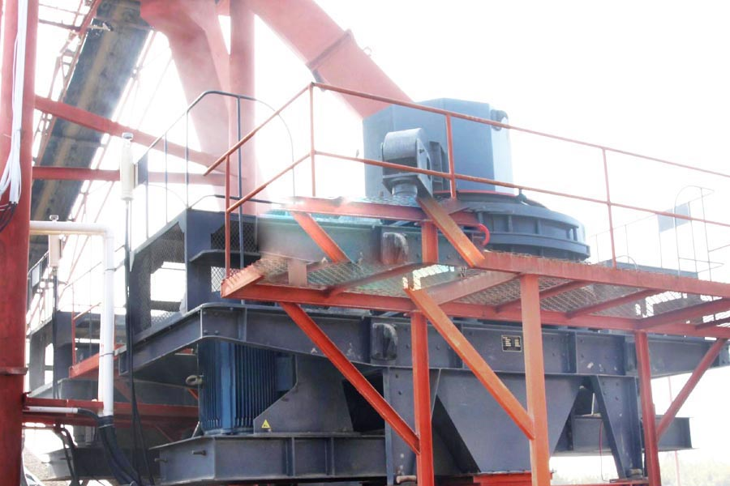

Construction waste crushing production line

Mobile construction waste crushing station for urban construction waste crushing.
leaching quartz process line
leaching quartz process line. Quartz stone crusher, quartz sand production line, quartz sand prices, quartz crusher is professional quartz stone crusher equipment, quartz sand production line manufacturer Great Wall Heavy professional production, with a variety of quartz sand production equipment model, quartz sand production line equipment parameters Visible in the specification.
Quartz stone crusher, quartz stone crushing plant, quartz crushing machine, with more than 20 years of rich experience in crushing technology, quartz stone crusher Liming Heavy million customers continue to require the use of different crushing indispensable outstanding characteristics.

Crushing and grinding process is essential process in quartz sand, glass and ceramics production line.
In crushing process, we use jaw crusher, impact crusher, cone crusher, vsi crusher and mobile crusher as quartz stone crusher machine. These crushers and belt conveyor, vibrating screen, vibrating feeder form a complete quartz crushing plant. Of course, glass crusher and ceramics crusher have differences. Natural Marbles are crushed into smaller ones in crushing process.
Crushing and grinding process is essential process in quartz sand, glass and ceramics production line.
In crushing process, we use jaw crusher, impact crusher, cone crusher, vsi crusher and mobile crusher as quartz stone crusher machine. These crushers and belt conveyor, vibrating screen, vibrating feeder form a complete quartz crushing plant. Of course, glass crusher and ceramics crusher have differences. Natural Marbles are crushed into smaller ones in crushing process.
The preferred cone crusher crushing of quartz stone, quartz stone is relatively stable at room temperature, easy and sulfuric acid, hydrochloric acid and other reaction, and the hardness is relatively large, generally not a good crusher equipment crushing the ore. Only select cone crusher to achieve energy efficiency.
Quartz sand production line
Quartz sand is the important artifical sand used in construction building. In quarry, we can use quartz sand making machine including quartz sand crusher, sand washing machine, and screening machinery in quartz sand plant.
Sudan quartz crushing equipment suppliers. We can design the different quartz sand making plant, according to the requirements about sizt of quartz sand. Different quartz crusher can be used for crushing quartz into different size. Usually the complete quartz sand making production line uses jaw crusher for primary crushing, then cone crusher as fine crusher. VSI crusher is the special quartz crushing machine used in sand making process. It is used to make quarta sand with particle of uniform diameter, so it is also called stone shapping machine.
Quartz sand can be divided into refined the processing plant quartz sand, white quartz sand, ordinary quartz sand. The size of ordinary quartz sand range 5- 220 mesh. The processing plant quartz sand range 5-480 mesh. White quartz sand ranges are 1-0.5mm, 0.5-0.1mm, 0.1-0.01mm, 0.01-0.005mm.
Quartz crusher used in glass production line
Impact crusher is the widely used quartz stone crusher that used in glass crushing process. It can crush quartz stone into small dust with 10 mm. and the capacity can up to 250 t/p.
Mobile quartz crusher is the essential stone crushers, it includes crushing and screening process. Mobile quartz stone crusher includes four models: mobile jaw crusher, mobile impact crusher, mobile cone crusher, crawler type mobile crusher.
xsm is a manufacturer of gravel crushers and grinder mills, can supplies glass crushing plant, ceramics crushing plant and quartz sand production line. Of course, we can also design quartz crushing plant according to the requirements of customers. xsm not only provide quartz quarry equipment for mining for sale with best prices such as quartz crusher machine and quartz grinding mill, but also the installastion and maintenance service.
Sudan quartz crushing equipment for sale. Quartz sand production line - stone crusher, CAG produce a full set of quartz sand production line equipment, to provide you with comprehensive technical support, sand production line consists of vibrating feeder, jaw crusher (according to the material size, optional) Crusher (third generation sand making machine), vibrating screen.
Which crushed quartz crushing equipment, can be crystalline quartz silica, it is one of the hardest and most stable mineral in nature to accommodate sandstone, quartzite and quartzite veins exist. To get the best quartz processed products, and the investment cost savings, then select the appropriate crushing.
Leave Me A Message, Now
If you have any questions regarding equipment prices, production line configuration or other problems, you can send a message to us, we will contact you soon.